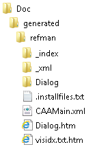

RADE |
C++ API Documentation Generator |
mkmancppGenerating documentation for C++ header files |
| Quick Reference | ||
Abstractmkmancpp is a tool that parses the declarations and documentation comments in a set of C++ header files and produces a set of HTML pages describing the C++ entities (class, interface, constructor, method, data member, global function, macro, collection class, enumeration, operator, structure, and typedef). |
Warning: The files must be located in frameworks with names without extensions (education and test frameworks are not processed.) in the following directories:
| L1 Tagged Headers | L0 Tagged Headers |
|---|---|
/** * @CAA2Level L1 * @CAA2Usage U1 */ |
/** * @CAA2Level L0 * @CAA2Usage U1 */ |
/** * @CAA2Level Protected * @CAA2Usage U1 */
/** * @CAA2Level Private * @CAA2Usage U1 */
All non tagged or wrongly tagged headers are not processed.
mkmancppM [-h] [-W <path>] [-o <path>] [-private] [-level <level>] [-docPrivateMember] [-productID <name>] [-htmlfooter <path>] [-stylesheet <path>]
| Option | Description | ||||
|---|---|---|---|---|---|
-h |
Command help. | ||||
-W <path> |
Define the full path of the workspace to document. | ||||
-o <path> |
Define the full path of the HTML output directory. If this option is not used, then the default output path is '<ws path>/Doc/generated/refman'. Note that the command fails if this output directory already exists. | ||||
-private |
Scan PrivateInterfaces directories. To be used with -level Private. |
||||
-level <level> |
Define the processed header level. By default, only the headers in the PublicInterfaces directory are processed.
For interfaces and classes, only the public methods and data members are
processed.
Valid values are:
|
||||
-docPrivateMember |
Generate documentation for both protected and private data members. | ||||
-productID <name> |
Define the product name used in all page titles. | ||||
-htmlfooter <path> |
Define the full path name of the HTML footer for all pages. | ||||
-stylesheet <path> |
Define the full path name of the HTML style sheet. |
[Top]
Run mkmancpp for the C++ classes and interfaces of your framework.
If the option -w is not edited to define the path of the workspace to
document, mkmancpp will use the path of the current workspace. When mkmancpp
runs, errors are issued as lines beginning with # mkmdocman-ERROR
and a short explanation of the error found.
html files are generated in the Doc\generated\refman directory located in your workspace root directory. Doc is at the same level than your framework directories.
 |
refman contains:
You can ignore the other directories and files. Most of these files are pointed to in the generated pages. |
[Top]
mkmancpp
This command parses the current workspace and generates the HTML documentation of the public members of the L1 tagged C++ header files located in the PublicInterfaces directories of all the frameworks in the workspace.
| UNIX |
mkmancpp -W /u/users/UserName/myWs -o /u/users/UserName/myWs/htmlDoc |
|---|---|
| Windows |
mkmancpp -W E:\myWs -o E:\myWs\htmlDoc |
This command parses the workspace myWs and generates the HTML documentation in the directory htmlDoc of this workspace. Again the public members of the L1 tagged C++ header files located in the PublicInterfaces directories of all the frameworks in the workspace are processed.
mkmancpp -level Protected
This command parses the current workspace and generates the HTML documentation of the public members of the L1 and L0 tagged C++ header files located in the PublicInterfaces directories, and the Protected tagged C++ header files located in the ProtectedInterfaces directories of all the frameworks in the workspace.
mkmancpp -level Private -private
This command parses the current workspace and generates the HTML documentation of the public members of the L1 and L0 tagged C++ header files located in the PublicInterfaces directories, the Protected tagged C++ header files located in the ProtectedInterfaces directories, and the Private tagged C++ header files located in the PrivateInterfaces directories of all the frameworks in the workspace.
mkmancpp -level Private -private -docPrivateMember
This command parses the current workspace and generates the HTML documentation of the public members and of the protected and private data members of the L1 and L0 tagged C++ header files located in the PublicInterfaces directories, the Protected tagged C++ header files located in the ProtectedInterfaces directories, and the Private tagged C++ header files located in the ProtectedInterfaces directories of all the frameworks in the workspace.
| UNIX |
mkmancpp -htmlfooter /u/users/UserName/Footer.txt -stylesheet /u/users/UserName/Stylesheet.css |
|---|---|
| Windows |
mkmancpp -htmlfooter E:\myWS\Footer.txt -stylesheet E:\myWS\Stylesheet.css |
This command parses the current workspace and generates the HTML documentation of the public members of the L1 tagged C++ header files located in the PublicInterfaces directories of all the frameworks in the workspace. The footer must contain an HTML section which is included at the bottom of each generated file. The style sheet is referenced by each generated file.
[Top]
| [1] | CAA V5 C++ Interface and Class Documentation Rules |
| [2] | CAA V5 Authorized API Identification, Usage, Deprecation, and Stability |
| [Top] | |
| Version: 1 [Sept 2001] | Document created |
| [Top] | |
Copyright © 2000, Dassault Systèmes. All rights reserved.